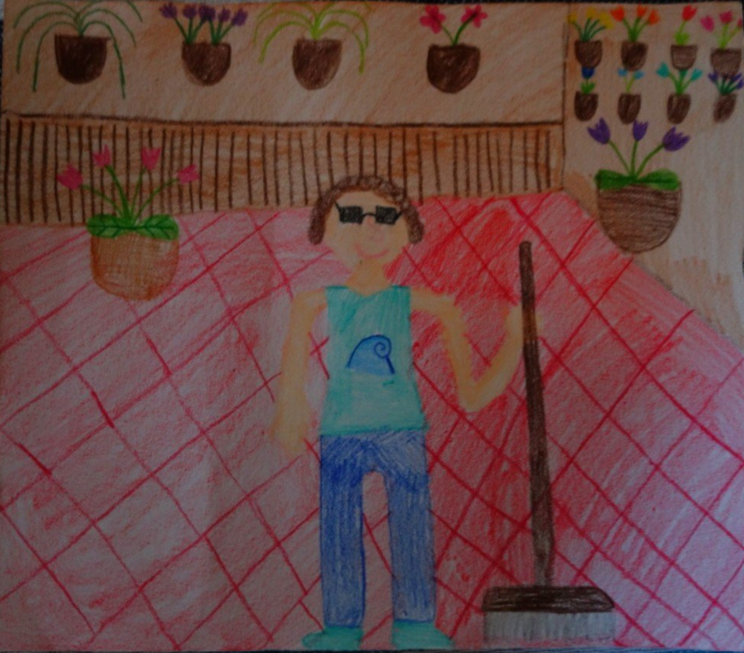
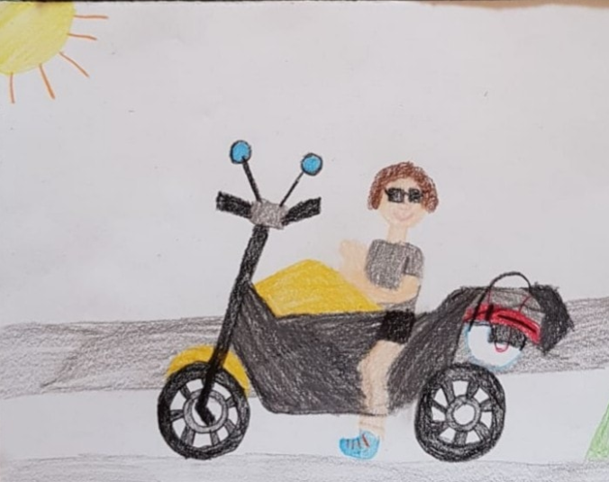

Ciao sono Maurizio.
 
Benvenuti nel sito dedicato alla bioinformatica, dove esploreremo analisi di dati biologici complessi utilizzando il potente linguaggio di programmazione R.
Questo è un sito di miei appunti di “viaggio” nel mondo della Bioinformatica per cercare di riassumere le cose più interessanti e gli esercizi utili ad esplorare questo mondo al confine tra la biologia, la genetica, la statistica e l’informatica.
Cominciamo con qualcosa di base per poi capici meglio. Ho identificato alcuni principi chiave che costituiscono la base per capirci in questo lavoro. Ma proprio la base, quindi cercate di memorizzarli.
Il mondo microscopico che ci circonda è popolato da diverse entità biologiche, tra cui spiccano i procarioti, gli eucarioti e i virus. I procarioti sono le forme di vita più semplici e antiche: cellule prive di nucleo definito e di organelli interni, come i batteri. Al contrario, gli eucarioti rappresentano organismi più complessi, le cui cellule possiedono un vero nucleo che racchiude il DNA e numerosi organelli specializzati, caratteristica di piante, animali, funghi e protisti. Infine, i virus non sono considerati veri esseri viventi: privi di una propria autonomia metabolica, sono parassiti obbligati che devono infettare una cellula ospite (sia essa procariotica o eucariotica) per potersi replicare, sfruttandone il macchinario biologico.
Nei procarioti (es. batteri), i geni sono generalmente “continui”
Negli eucarioti (es. l’uomo), i geni sono spesso interrotti. Gli esoni sono le “parti significative” del gene. Le parti cioè depurate dalle interruzioni.
Non tutti gli esoni sono “codificanti”. Un esone codificante (CDS) è quella parte dell’esone che contiene le istruzioni per la sintesi della proteina.
Questa sequenza di numeri separati da punto e virgola rappresenta le posizioni di inizio (sul cDNA) di ciascun esone codificante (CDS)
I numeri intervvalati dal punto e virgola che troviamo nelle diciture dei codici (es: cdna_coding_start: 2035;2926;1397;3007;…) rappresentano le posizioni di inizio (sul cDNA) di ciascun esone codificante (CDS) per questo trascritto.
Altre cose fondamentali per capirsi:
L’RNA polimerasi (che è un enzima) legge un filamento specifico dei due che compongono la doppia elica del DNA: legge il filamento detto “stampo”.
l’RNA polimerasi sintetizza poi una molecola mRNA (RNA messaggero) detto “trascritto”
mRNA (RNA messaggero): Questo è il trascritto originale del gene, prodotto tramite trascrizione dal DNA nel nucleo. L’mRNA è una molecola che contiene sequenze complementari al filamento stampo e contiene Uracile (U) al posto della Timina (T).
cDNA (complementary DNA): Il cDNA è una copia del mRNA, ma in formato DNA. Viene sintetizzato in laboratorio (o in silico, cioè in un database) a partire da un mRNA maturo attraverso un processo chiamato trascrizione inversa. Il cDNA è contiene Timina (T) e non Uracile (U). NB: Le sequenze che si scaricano dei trascritti con getBM(attributes = c(“ensembl_transcript_id”, “cdna”), …) sono sequenze di cDNA (complementary DNA).
Ti mostro alcune ricerche:
Questa è una ricerca ampia che restituisce sequenze ID nucleotidiche di vari ceppi e tipi di influenza.
results <- entrez_search(db = "nuccore", term = "influenza virus", retmax = 30)
print(results$ids)## [1] "3048033254" "3048033252" "3042835645" "3046338319" "3046338318" "3046338317" "3046338316"
## [8] "3046338315" "3046338314" "3046337885" "3046337883" "3046337881" "3046337879" "3046288745"
## [15] "3046288338" "3046288336" "3046288334" "3046288332" "3046287943" "3046287942" "3046287941"
## [22] "3046287940" "3046260687" "3046260686" "3046260685" "3046260684" "3046260183" "3046260182"
## [29] "3046260181" "3046260180"Questa ricerca è più mirata: vogliamo le sequenze ID del gene CFTR ([Gene]) specificamente dall’Homo sapiens ([Organism]) e che siano di tipo mRNA RefSeq:
results <- entrez_search(db = "nuccore",
term = "CFTR[Gene] AND Homo sapiens[Organism] AND NM_",
retmax = 10)
print(results$ids)## [1] "2194973865" "568815591" "832627291" "71517410" "51095065"Ricerca del Genoma Umano
results <- entrez_search(db = "nuccore", term = "Homo sapiens[Organism] AND chromosome 1 AND complete genome AND RefSeq", retmax = 3)
print(results$ids)## [1] "2194974903" "2194972450" "568815597"Il genoma umano è un progetto in continuo aggiornamento. Nel corso del tempo, sono state prodotte diverse versioni di riferimento dell’assemblaggio del genoma (chiamate “assemblies”). Ogni nuova versione incorpora dati di sequenziamento migliorati, corregge errori, riempie lacune e raffina le annotazioni. La versione più recente e consolidata denominata NC_000001.11 ma non corrisponde a nessuno dei tre ID elencati:
summary_result <- entrez_summary(db = "nuccore", id = 1519246517)
summary_result$accession## [1] "NM_018372.4"summary_result <- entrez_summary(db = "nuccore", id = 1519311725)
summary_result$accession## [1] "NM_024674.6"summary_result <- entrez_summary(db = "nuccore", id = 1519246553)
summary_result$accession## [1] "NM_152608.4"Vabbè, poco male, lo cercheremo direttamente con l’Accession ID (NC_000001)
results <- entrez_search(db = "nuccore",term = "NC_000001[Accession]", retmax = 1)
print(results$ids)## [1] "568815597"Ora che ho l’ID provo a isolare una porzione di Genoma Umano in formato fasta:
uid_chr1 <- "568815597"
database_name <- "nuccore"
start_position <- 10000
end_position <- 12000
WOW <- entrez_fetch(db = database_name,
id = uid_chr1,
rettype = "fasta",
retmode = "text",
seq_start = start_position,
seq_stop = end_position)
FASTA(WOW)Nota: I codoni di START (ATG) sono in ROSSO, i codoni di STOP (TAA, TAG, TGA) sono in BLU
1 NTAACCCTAACCCTAACCCTAACCCTAACCCTAACCCTAACCCTAACCCTAACCCTAACC 61 CTAACCCTAACCCTAACCCTAACCCTAACCCTAACCCTAACCCTAACCCAACCCTAACCC 121 TAACCCTAACCCTAACCCTAACCCTAACCCCTAACCCTAACCCTAACCCTAACCCTAACC 181 TAACCCTAACCCTAACCCTAACCCTAACCCTAACCCTAACCCTAACCCTAACCCCTAACC 241 CTAACCCTAAACCCTAAACCCTAACCCTAACCCTAACCCTAACCCTAACCCCAACCCCAA 301 CCCCAACCCCAACCCCAACCCCAACCCTAACCCCTAACCCTAACCCTAACCCTACCCTAA 361 CCCTAACCCTAACCCTAACCCTAACCCTAACCCCTAACCCCTAACCCTAACCCTAACCCT 421 AACCCTAACCCTAACCCTAACCCCTAACCCTAACCCTAACCCTAACCCTCGCGGTACCCT 481 CAGCCGGCCCGCCCGCCCGGGTCTGACCTGAGGAGAACTGTGCTCCGCCTTCAGAGTACC 541 ACCGAAATCTGTGCAGAGGACAACGCAGCTCCGCCCTCGCGGTGCTCTCCGGGTCTGTGC 601 TGAGGAGAACGCAACTCCGCCGTTGCAAAGGCGCGCCGCGCCGGCGCAGGCGCAGAGAGG 661 CGCGCCGCGCCGGCGCAGGCGCAGAGAGGCGCGCCGCGCCGGCGCAGGCGCAGAGAGGCG 721 CGCCGCGCCGGCGCAGGCGCAGAGAGGCGCGCCGCGCCGGCGCAGGCGCAGAGAGGCGCG 781 CCGCGCCGGCGCAGGCGCAGACACATGCTAGCGCGTCGGGGTGGAGGCGTGGCGCAGGCG 841 CAGAGAGGCGCGCCGCGCCGGCGCAGGCGCAGAGACACATGCTACCGCGTCCAGGGGTGG 901 AGGCGTGGCGCAGGCGCAGAGAGGCGCACCGCGCCGGCGCAGGCGCAGAGACACATGCTA 961 GCGCGTCCAGGGGTGGAGGCGTGGCGCAGGCGCAGAGACGCAAGCCTACGGGCGGGGGTT 1021 GGGGGGGCGTGTGTTGCAGGAGCAAAGTCGCACGGCGCCGGGCTGGGGCGGGGGGAGGGT 1081 GGCGCCGTGCACGCGCAGAAACTCACGTCACGGTGGCGCGGCGCAGAGACGGGTAGAACC 1141 TCAGTAATCCGAAAAGCCGGGATCGACCGCCCCTTGCTTGCAGCCGGGCACTACAGGACC 1201 CGCTTGCTCACGGTGCTGTGCCAGGGCGCCCCCTGCTGGCGACTAGGGCAACTGCAGGGC 1261 TCTCTTGCTTAGAGTGGTGGCCAGCGCCCCCTGCTGGCGCCGGGGCACTGCAGGGCCCTC 1321 TTGCTTACTGTATAGTGGTGGCACGCCGCCTGCTGGCAGCTAGGGACATTGCAGGGTCCT 1381 CTTGCTCAAGGTGTAGTGGCAGCACGCCCACCTGCTGGCAGCTGGGGACACTGCCGGGCC 1441 CTCTTGCTCCAACAGTACTGGCGGATTATAGGGAAACACCCGGAGCATATGCTGTTTGGT